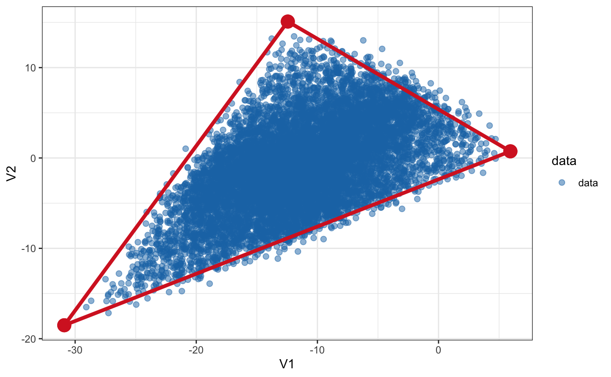
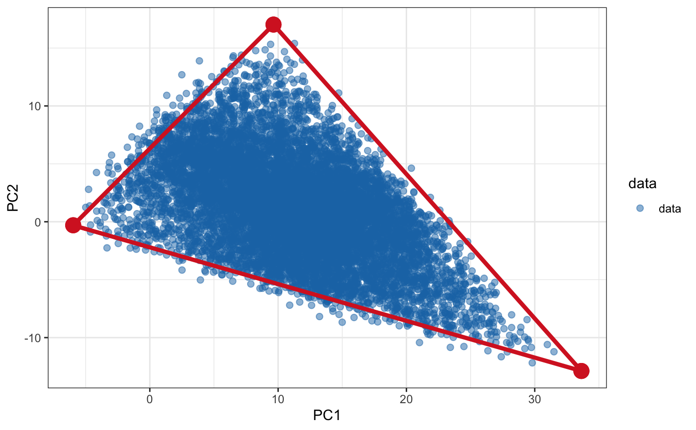

Project archetypes and data in PCA dimentions
project_to_pcs.Rdproject_to_pcs() projects archetypes (arc_data) and data points (arc_data) to PC space. Archetypes are projected into PC space of data, e.i. archetypes do not affect PCA and are just projected afterwards.
project_from_pc() projects archetypes and data points to original space provided SVD decomposition results. Optionally do the reverse of log2 transformation to obtain normalised expression space.
project_to_pcs(arc_data = NULL, data, n_dim = nrow(data), s = NULL, pc_method = c("svd", "irlba"), log2 = FALSE, offset = 1, zscore = FALSE) project_from_pc(arc_data, s, undo_zscore = FALSE, undo_log2 = FALSE, offset = 1)
Arguments
| arc_data | objects of class "pch_fit", "b_pch_fit" storing the position of archetypes and other data produced by |
|---|---|
| data | matrix of data used in archetypal analysis, dim(variables/dimentions, examples) |
| n_dim | number of principal component dimensions |
| s | list 's' containing SVD decomposition results (U, d, Vt), standard deviation and mean of genes used for decomposition (sd, means) |
| pc_method | |
| log2 | log2-transform before to z-scoring and PC-projection |
| offset | log2 transformation offset (e.g. |
| zscore | standardise (substract the mean and divide by standard deviation) prior to PC-projection |
| undo_zscore | undo z-scoring by multiplying by standard deviation and adding the mean? Undo z-scoring precedes exponentiation. |
| undo_log2 | undo log2-transformation by exponentiating and substracting pseudocount? |
Value
project_to_pcs(): list with projected $data, archetypes ($arc_data) and $s list of decomposition matrices, sds and means
project_from_pc(): archetypes projected to data space
Examples
# Random data that fits into the triangle set.seed(4355) arc_data = generate_arc(arc_coord = list(c(5, 0), c(-10, 15), c(-30, -20)), mean = 0, sd = 1) data = generate_data(arc_data$XC, N_examples = 1e4, jiiter = 0.04, size = 0.9) # Plot plot_arc(arc_data = arc_data, data = data, which_dimensions = 1:2, data_alpha = 0.5) + ggplot2::theme_bw()# Project to PCs (in this case just rotate to align x-axis with # the axis of most variation because the data is already 2D) pcs = project_to_pcs(arc_data, data, n_dim = 2, pc_method = c("svd", "irlba")[1]) # Plot in PC coordinates plot_arc(arc_data = pcs$arc_data, data = pcs$data, which_dimensions = 1:2, data_alpha = 0.5) + ggplot2::theme_bw()# Project from PCs back to expression projected = project_from_pc(pcs$arc_data, pcs$s, undo_zscore = FALSE, undo_log2 = FALSE) # Plot plot in projected coordinates plot_arc(arc_data = projected, data = data, which_dimensions = 1:2, data_alpha = 0.5) + ggplot2::theme_bw()